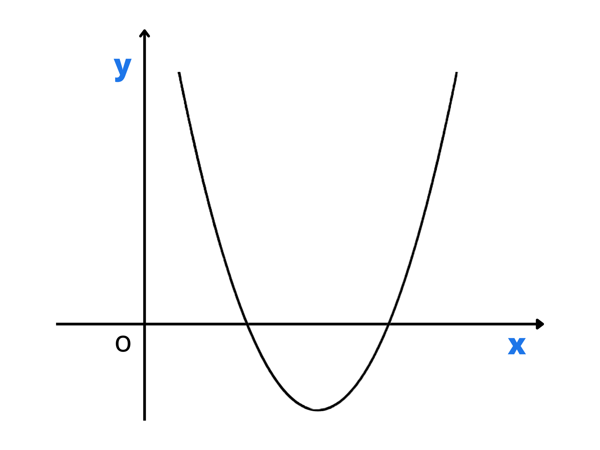

Le disequazioni di secondo grado sono equazioni di secondo grado con la differenza che al posto di porre una condizione di uguaglianza tra i membri se ne pone una di disuguaglianza che può essere maggiore o minore, ma anche maggiore o uguale o minore o uguale
Di seguito alcuni esempi di disequazioni di secondo grado:
• \(3x^2-x+ \sqrt3 \geq 0\)
• \(x^2+6x-16<0\)
• \(\sqrt2x^2-2x+3 \leq 0\)
Per risolvere una disequazione di secondo grado basterà studiare il variare del segno della disequazione in funzione di \(x\) e prendere quei valori per i quali è soddisfatta la condizione di disuguaglianza.
Vediamo un esempio:
\(3x-x+5 \leq 2x^2+1\)
Portiamo tutti i termini da un lato in modo da ottenere \(0\) dall’altro:
\(-x^2+x+2 \leq 0\)
Ora risolviamo come con la formula di risoluzione delle equazioni di secondo grado come se fosse un’equazione:
\(-x^2+x+2 =0 \longrightarrow\) \(x={-1 \pm \sqrt{1+4 \cdot2} \over -2} \longrightarrow\) \(x_1=-1; x_2 =2\)
Avendo calcolato le soluzioni, sappiamo per quali \(x\) la disequazione sarà \(0\). Come si può sapere quando invece sarà positiva o negativa?
Per rispondere a questa domanda possiamo fare un passo indietro e ragionare sull’equazione di secondo grado in se: come visto nelle lezioni precedenti, il grafico di un’equazione di secondo grado sul piano cartesiano è una parabola.

E quindi? Osservando con uno sguardo attento ci si può accorgere che la parabola può solo essere posizionata in \(3\) modi rispetto all’asse delle ascisse (\(x\)):
1. Intersecarla in \(2\) punti distinti (il nostro caso)
2. Intersecarla in \(2\) punti coincidenti
3. Non intersecarla affatto (2 soluzioni complesse e coniugate)
Questa informazione la ricaviamo dalle \(2\) soluzioni trovate in precedenza.
\(x_1=-1; x_2 =2\)
Per l’orientamento della parabola invece, basterà guardare il coefficiente del primo termine dell’equazione (il coefficiente di \(x^2\)). Se questo è positivo avrà una concavità verso l’alto, se negativo invece verso il basso.
\(\rightarrow -x^2\leftarrow +x+2 \leq 0\)
Questo si può ricordare facilmente pensando a una faccia, se positiva la bocca sarà una parabola verso l’alto, se negativa questa sarà verso il basso.
Ora che sappiamo tutto su questa parabola possiamo arrivare al risultato finale:
Nel grafico le soluzioni positive corrispondono alla parte di parabola sopra all’asse delle ascisse, dato che il segno della disequazione che stiamo risolvendo è \(\leq\) le \(x\) la parte di parabola che la verifica è quella sotto l’asse delle ascisse più le \(2\) intersezioni trovate in precedenza.
La parabola in questo caso è concava verso il basso perché il coefficiente del primo termine è negativo.
In questo caso l’equazione è verificata per le \(x\) che la rendono minore o uguale a \(0\), Quindi, guardando il grafico, il risultato della disequazione sono tutte le \(x\) minori o uguali alla radice più piccola dell’equazione iniziale e tutte le \(x\) maggiori o uguale alla radice più grande.
\(x_1=-1; x_2 =2\)
Soluzione: \(]-\infty, -1] \cup [2, +\infty[\)
Un altro modo per risolvere le disequazioni di secondo grado è di fattorizzare il nostro polinomio e controllare il segno ogni fattore singolarmente e poi quello del loro prodotto.
Esempio:
\(x^2+x-2 \geq0\)
Fattorizzazione:
\((x+2)\cdot (x-1) \geq 0\)
Un modo semplice per fattorizzare un polinomio è cercare i due numeri la cui somma sia il coefficiente di \(x\) e il cui prodotto sia il termine noto.
Una volta fattorizzato il polinomio otterremo qualcosa del genere \((x+g) \cdot (x+r)\).
Prima ci chiederemo quando \(x+g\) è positivo e quando negativo.
Dunque negli intervalli in cui il loro segno sarà uguale, il prodotto sarà positivo, mentre dove saranno di segni discordi il prodotto sarà negativo. Forniamo un esempio per chiarire meglio:
Dato il polinomio \( x^2+3x-4\) trovare per quali valori di \(x\) esso risulta essere maggiore di \(0\).
Notiamo che esso è fattorizzabile in \((x+4) \cdot (x-1)\). Dunque analizziamo i singoli termini.
\(x+4\) è uguale a \(0\) quando \(x=-4\), è maggiore di \(0\) quando \(x > -4\) e minore di \(0\) quando \(x<-4\).
\(x-1\) è uguale a \(0\) quando \(x=1\), è maggiore di \(0\) quando \(x>1\) e minore di \(0\) quando \(x<1\).
Soprattutto in casi più complicati tracciamo il seguente grafico, dove indichiamo con una retta continua i valori positivi, con una retta tratteggiata i valori negativi e con delle rette verticali gli \(0\):